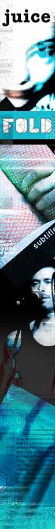

| |
THE FRESH FLAVOUR OF JUICE
| |
Of all noise projects, there's one in particular that opened the creative flood gates the widest - JUICE magazine - seeking arty works in whatever style or format the punters wanted, as long as it would fit in on the page of a magazine.
| |
"What came back," enthuses noise Print Editor Tracey Grimson, "was an amazing array of everything from graffiti art to short story writing, and every point in between."
These many points Tracey refer to are, in many ways, indicative of the entire ethos behind noise, ie: writing, drawing, animating, photographing, filming, theorising, rhyming, recording, singing, painting, designing, stitching and protesting. Creating.
Sydney's Kaliopi Poppy Diamantis prepared an entire 'letters to the editor' section for JUICE that involved imaginary questions and answers from the public to noise, and then there's Teresa Leung from Narwee, NSW, who has pursued and perfected the fickle art of typography.
"Putting the artists of noise inside the pages of JUICE seemed to us like a really logical move," says JUICE acting editor Stuart Hitchings.
"Juice was involved with the LOUD festival in 1998 and we were really happy with the outcome of that," Hitchings continues, "so giving the young creative voices of Australia a platform again, this time in 2001, was something we were keen to do. The quality of work submitted to the JUICE project was really inspiring."
As part of this supplement, a number of ESKY project submissions were included [after the ESKY magazine ceased to exist during our project call-out period], giving the JUICE edition an extra abundance of cutting-edge, DIY works. Hence, one of the most immediate things that jumps into perspective when perusing this juicy visual feast is the un-refined nature of the talent.
Andy Sargent is a 22-year-old artist from West Hobart whose "insert name here" urban stencil captures more in it's simplicity than complex, layered art could often do. And the flowing beats of words from the pen of Christine Schaeffer's "Delta's Blues" are truly something to behold - part diary, part song and part Kerouac.
See artists like Canberra's Vissukamma Ratsaphong getting caught up in the visual, photographic and aural energy of live bands, Brisbane's Jordan Lewerissa letting his fascination with comics and Mr Bungle fuse into amazing cartoon drawings, and 18-year-old Anpha Tran from Joondanna, WA, using basic computer tools like MS Paint to create his Oz punk-influenced works.
But it's dang near impossible to give a full indication of what's in store with this 32-page supplement - you'll have to go and buy yourself a copy of JUICE to see the full picture. Maybe even find out a little bit about what Powderfinger get up to on tour while you're there - those handsome lads are on the cover.
Return to the JUICE homepage
(Psst... we reckon you'll also be interested in the ANTHOLOGY, ONLINE GALLERY and FLASH ANIMATIONS Projects)
|
|
|